Labeled figures
Lecture: Exam 3 · Lab practical · Labeled figures · Figure flashcards. Each figure is from your lecture slides; some slides leave labels blank on purpose. Look these over, then try the Diagrams cards.
Skull
Figure 7-2 Cranial and Facial Subdivisions of the Skull (Par
Axial Skeleton slides (8A), slide 18
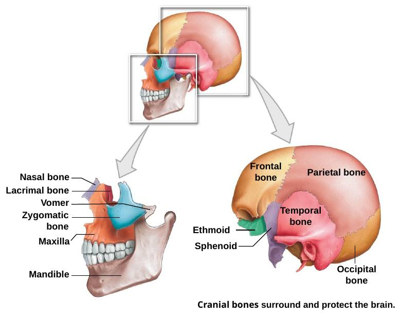
Labels: Zygomatic bone, Lacrimal bone, Sphenoid, Temporal bone, Parietal bone, Frontal bone, Nasal bone, Maxilla, Occipital bone, Vomer, Ethmoid, Mandible
Figure 7-3a The Adult Skull.
Axial Skeleton slides (8A), slide 21
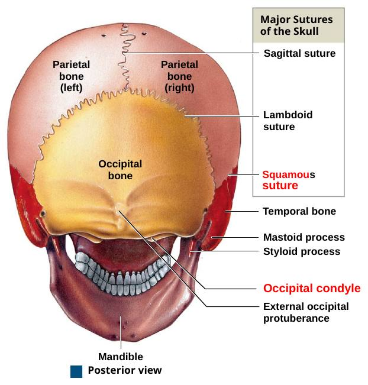
Labels: Occipital condyle, Mastoid process, Sagittal suture, Parietal bone (left), Parietal bone (right), Lambdoid suture, Mandible, Styloid process, Squamous suture, Temporal bone, External occipital protuberance, Occipital bone
Temporal bone, lateral view
Axial Skeleton slides (8A), slide 31
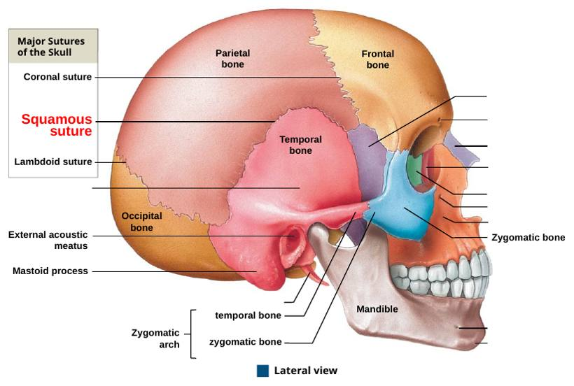
Labels: Zygomatic arch, Mandible, External acoustic meatus, Temporal bone, Parietal bone, Occipital bone, Mastoid process, zygomatic bone, Lambdoid suture, Squamous suture, Frontal bone, Coronal suture
Lateral view of the right Temporal bone
Axial Skeleton slides (8A), slide 32
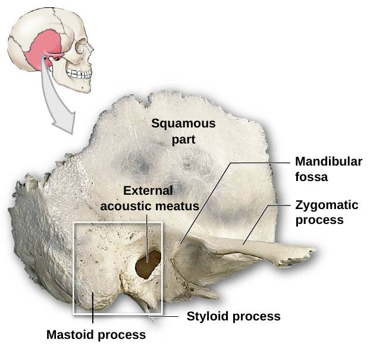
Labels: Zygomatic process, Mastoid process, External acoustic meatus, Styloid process, Squamous part, Mandibular fossa
Figure 7-9a The Ethmoid.
Axial Skeleton slides (8A), slide 44
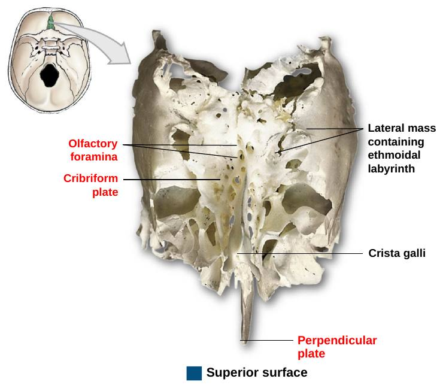
Labels: Olfactory foramina, Superior surface, Crista galli, Cribriform plate, Perpendicular plate
Orbitalrim
Axial Skeleton slides (8A), slide 50
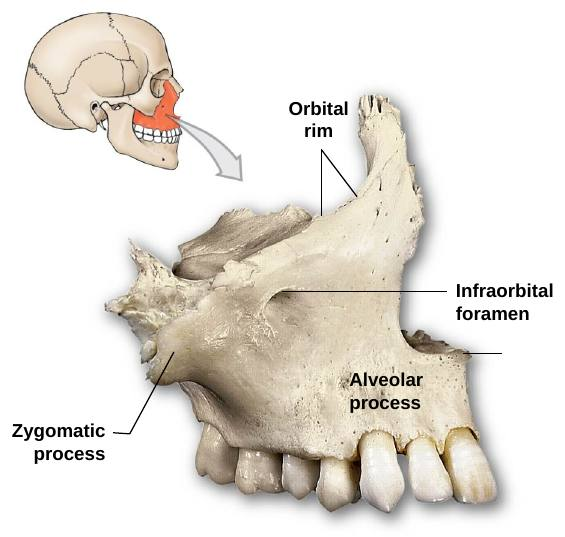
Labels: Alveolar process, Orbital rim, Zygomatic process, Infraorbital foramen
Inferior view
Axial Skeleton slides (8A), slide 52
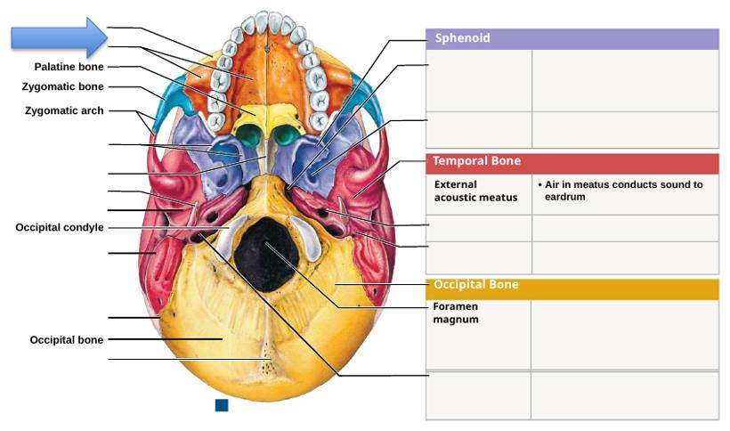
Labels: Foramen magnum, Temporal Bone, Occipital bone, Sphenoid, Zygomatic bone, Zygomatic arch, External acoustic meatus, Occipital condyle, Palatine bone
Figure 7-3c The Adult Skull.
Axial Skeleton slides (8A), slide 54
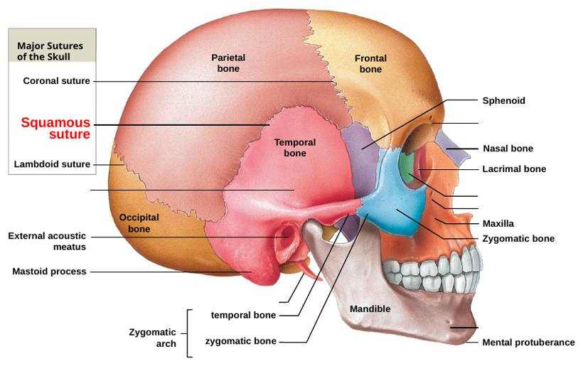
Labels: Occipital bone, Parietal bone, zygomatic bone, Zygomatic arch, Mandible, Nasal bone, Frontal bone, Lambdoid suture, Temporal bone, Sphenoid, Coronal suture, External acoustic meatus, Mastoid process, Squamous suture
The Facial Bones, bleached skull image
Axial Skeleton slides (8A), slide 56
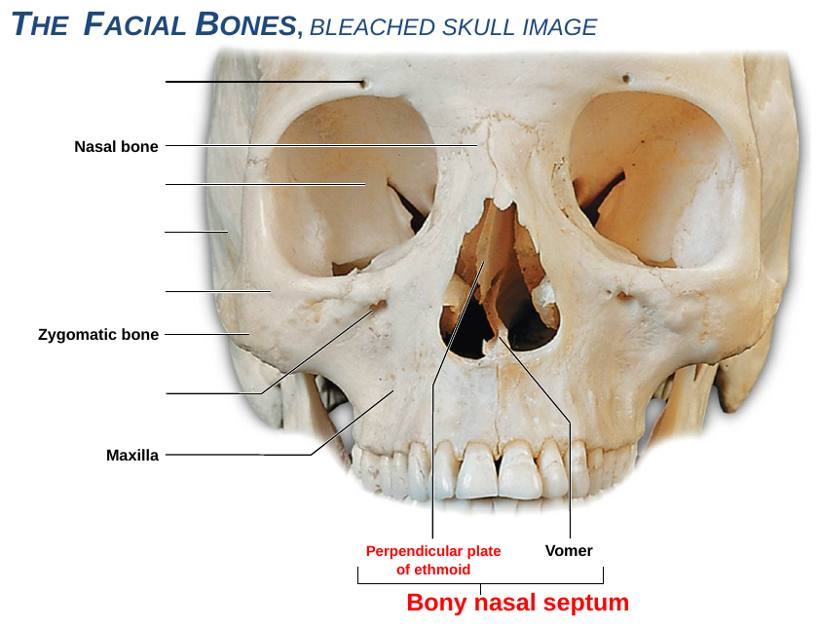
Labels: Zygomatic bone, Perpendicular plate of ethmoid, Nasal bone, Maxilla, Vomer, Bony nasal septum
Inferior view
Axial Skeleton slides (8A), slide 57
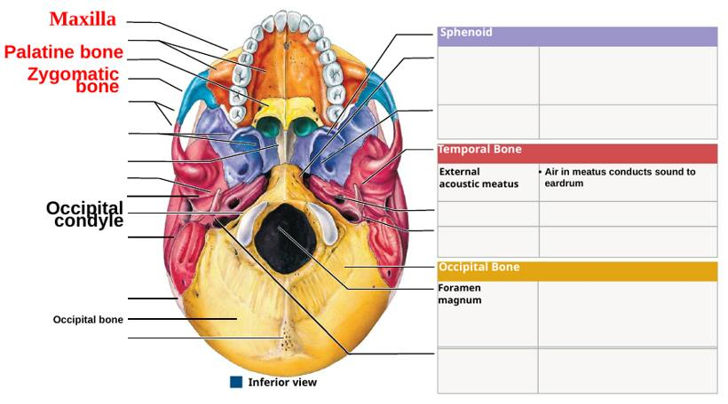
Labels: Zygomatic bone, Occipital bone, Temporal Bone, Palatine bone, Maxilla, Occipital condyle, Foramen magnum, External acoustic meatus, Sphenoid
Frontal bone
Axial Skeleton slides (8A), slide 58
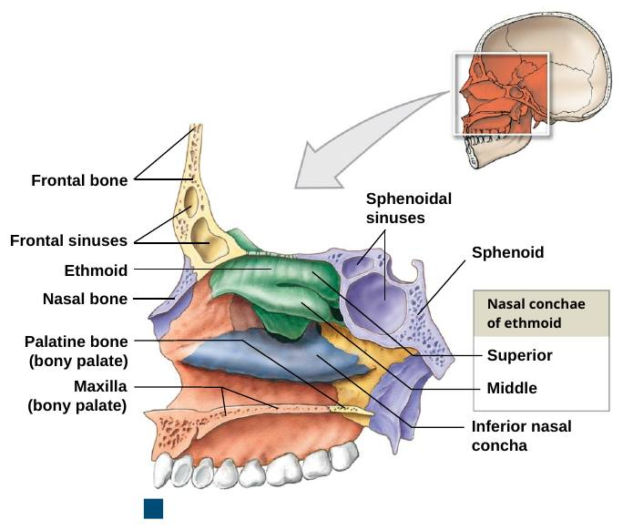
Labels: Nasal bone, Frontal bone, Middle, Palatine bone (bony palate), Superior, Maxilla (bony palate), Sphenoidal sinuses, Frontal sinuses, Ethmoid, Nasal conchae of ethmoid, Sphenoid, Inferior nasal concha
Figure 7-12a The Mandible.
Axial Skeleton slides (8A), slide 61
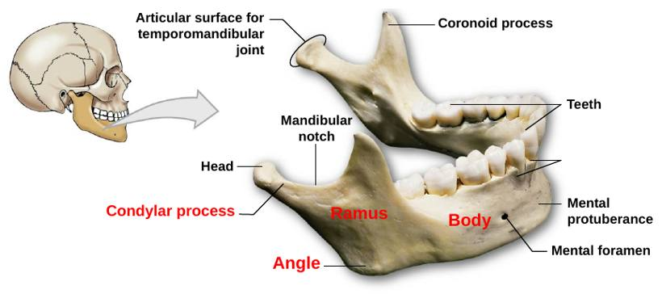
Labels: Angle, Condylar process, Coronoid process, Mandibular notch, Mental foramen, Teeth, Mental protuberance, Ramus
Figure 7-15a The Nasal Complex.
Axial Skeleton slides (8A), slide 74
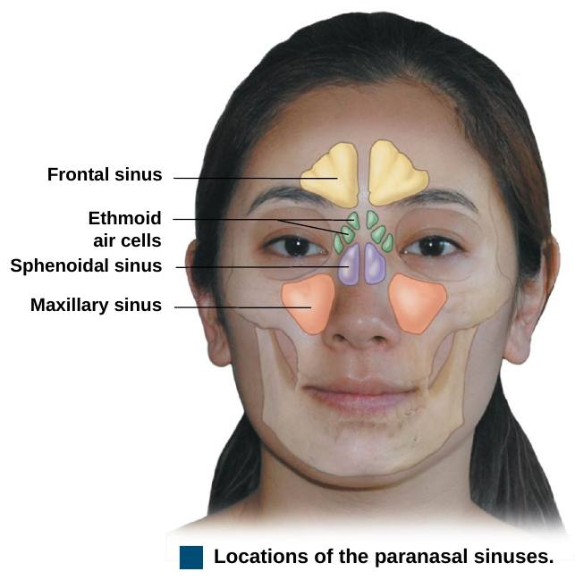
Labels: Maxillary sinus, Frontal sinus, Ethmoid air cells, Sphenoidal sinus
Figure 7-3b The Adult Skull.
Axial Skeleton slides (8A), slide 77
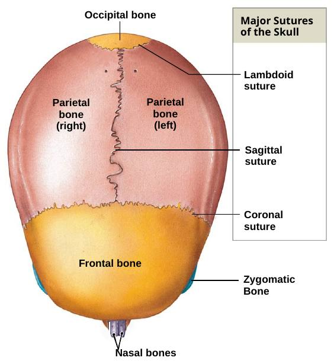
Labels: Parietal bone (left), Frontal bone, Zygomatic Bone, Nasal bones, Coronal suture, Occipital bone, Lambdoid suture, Parietal bone (right), Sagittal suture
Figure 7-3c The Adult Skull.
Axial Skeleton slides (8A), slide 78
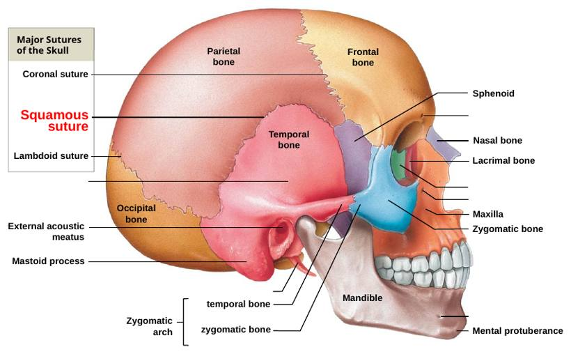
Labels: Mastoid process, Occipital bone, Sphenoid, Coronal suture, Nasal bone, Frontal bone, Parietal bone, Zygomatic arch, Squamous suture, Mandible, External acoustic meatus, Temporal bone, Lambdoid suture, zygomatic bone
Coronal suture
Axial Skeleton slides (8A), slide 80
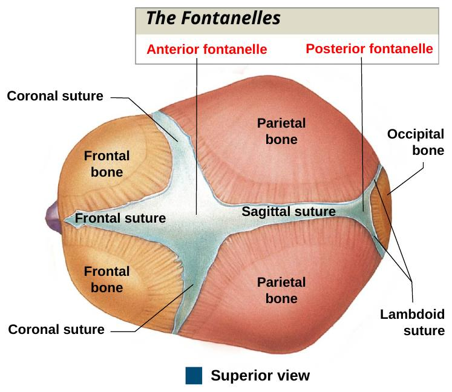
Labels: Frontal suture, Sagittal suture, Anterior fontanelle, Posterior fontanelle, Parietal bone, Frontal bone, Coronal suture, Occipital bone, Lambdoid suture
Vertebrae, sacrum & coccyx
Skull
Axial Skeleton slides (8A), slide 7
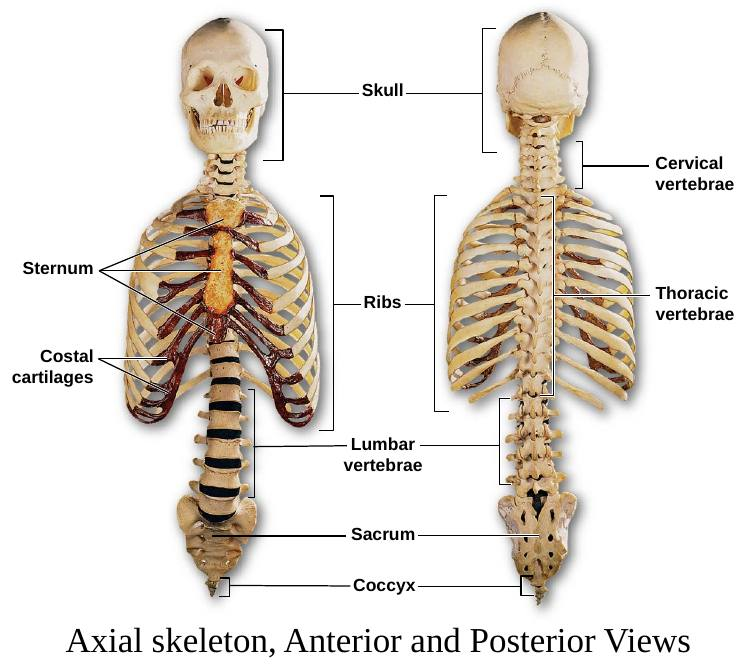
Labels: Coccyx, Thoracic vertebrae, Costal cartilages, Sternum, Ribs, Cervical vertebrae, Sacrum, Lumbar vertebrae
Figure 7-17 The Vertebral Column.
Axial Skeleton slides (8A), slide 94
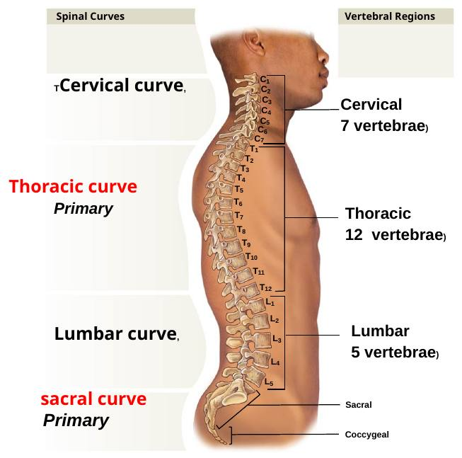
Labels: Sacral, Coccygeal, Vertebral Regions, TCervical curve, Lumbar curve
Figure 7-18d Vertebral Anatomy.
Axial Skeleton slides (8A), slide 98
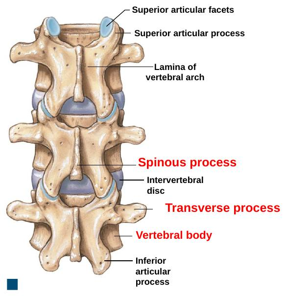
Labels: Inferior articular process, Lamina of vertebral arch, Superior articular facets, Spinous process, Intervertebral disc, Transverse process, Superior articular process, Vertebral body
Figure 7-18e Vertebral Anatomy.
Axial Skeleton slides (8A), slide 99
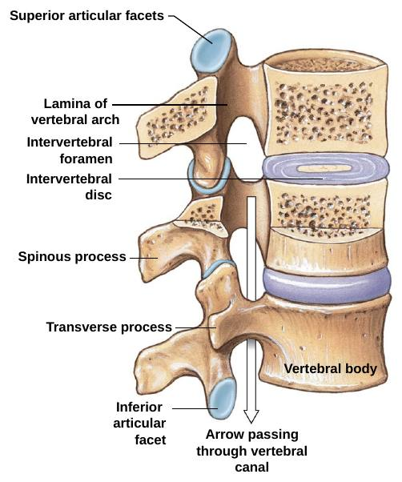
Labels: Intervertebral foramen, Spinous process, Transverse process, Vertebral body, Superior articular facets, Lamina of vertebral arch, Intervertebral disc, Inferior articular facet
Figure 7-19b The Cervical Vertebrae.
Axial Skeleton slides (8A), slide 105
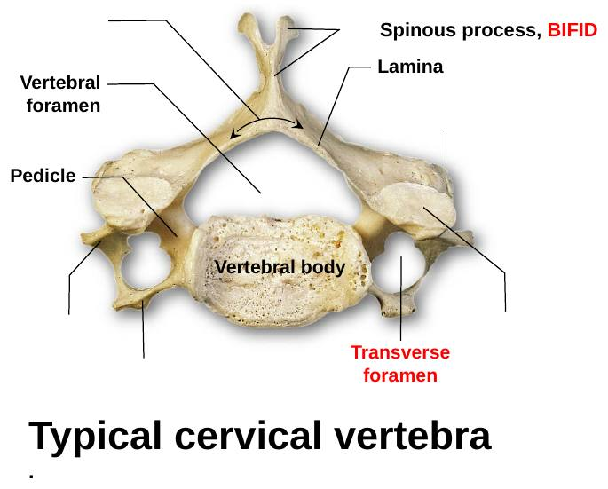
Labels: Pedicle, Transverse foramen, Spinous process, BIFID, Lamina, Vertebral foramen, Vertebral body
Figure 7-19d The Cervical Vertebrae.
Axial Skeleton slides (8A), slide 107
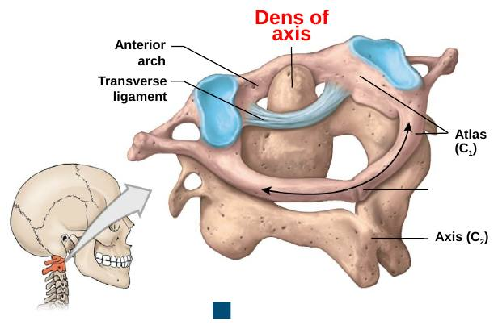
Labels: Dens of axis, Axis (C2), Transverse ligament, Anterior arch, Atlas (C1)
Figure 7-20a The Thoracic Vertebrae.
Axial Skeleton slides (8A), slide 110
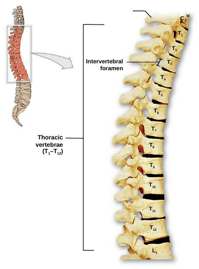
Labels: Thoracic vertebrae (T1–T12), T10, T12, T11, Intervertebral foramen
Figure 7-20b The Thoracic Vertebrae.
Axial Skeleton slides (8A), slide 111
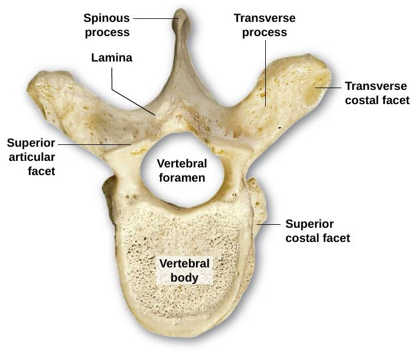
Labels: Superior articular facet, Transverse process, Vertebral body, Lamina, Vertebral foramen, Spinous process, Transverse costal facet, Superior costal facet
Typical Lumbar vertebra
Axial Skeleton slides (8A), slide 116
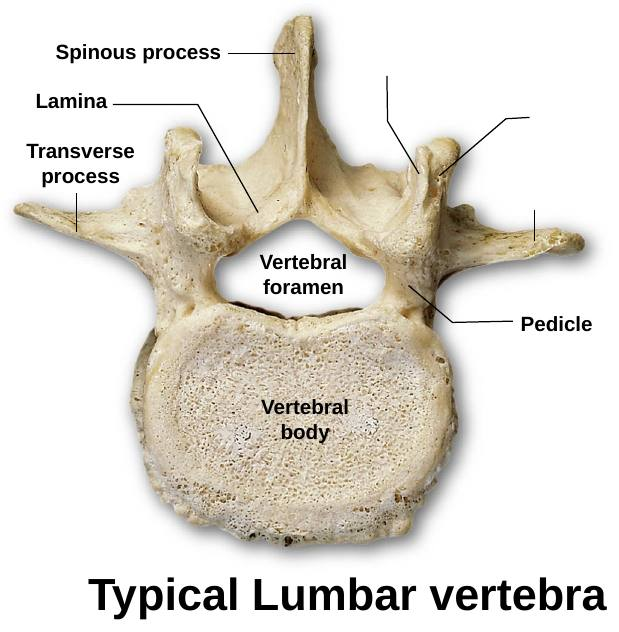
Labels: Transverse process, Spinous process, Vertebral body, Lamina, Pedicle, Vertebral foramen
Figure 7-21b The Lumbar Vertebrae.
Axial Skeleton slides (8A), slide 117
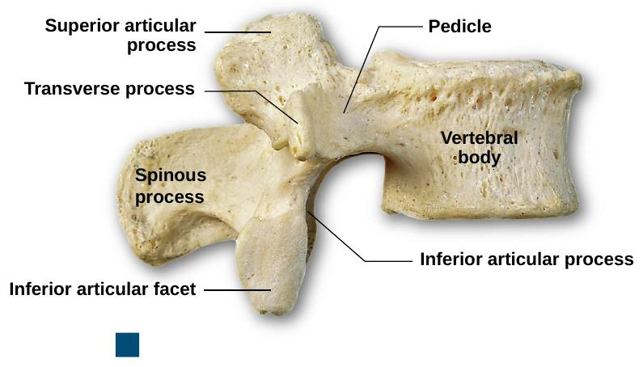
Labels: Spinous process, Inferior articular process, Pedicle, Transverse process, Inferior articular facet, Vertebral body, Superior articular process
Figure 7-22a The Sacrum and Coccyx.
Axial Skeleton slides (8A), slide 118
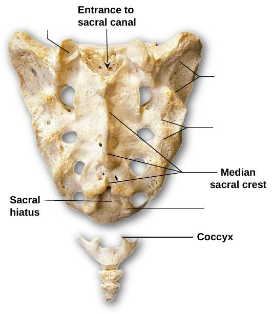
Labels: Coccyx, Median sacral crest, Sacral hiatus, Entrance to sacral canal
The Sacrum and Coccyx.
Axial Skeleton slides (8A), slide 120
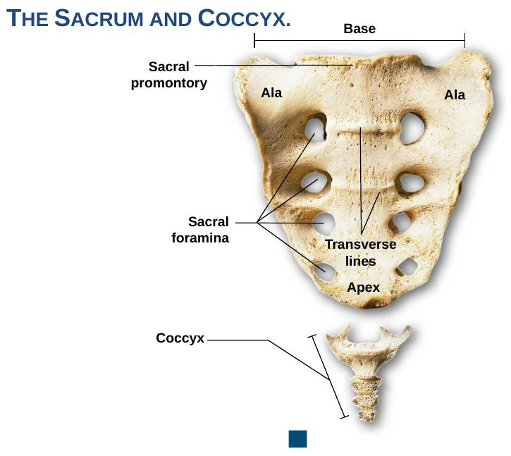
Labels: Sacral promontory, Ala, Transverse lines, Sacral foramina, Coccyx
Shoulder, arm, forearm & hand
Figure 8-3a The Right Scapula.
Appendicular Skeleton slides (8B), slide 8
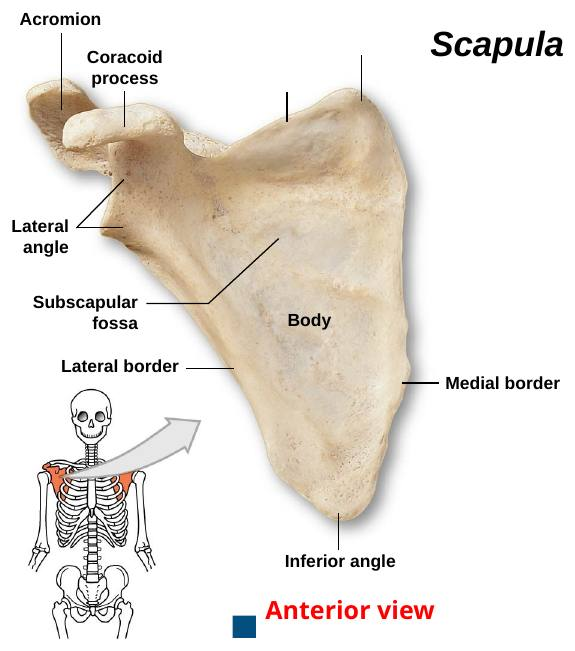
Labels: Lateral border, Acromion, Subscapular fossa, Scapula, Medial border, Coracoid process, Lateral angle, Inferior angle
The Scapula.
Appendicular Skeleton slides (8B), slide 9
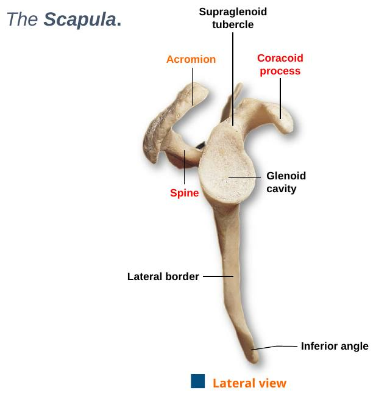
Labels: Spine, Inferior angle, Glenoid cavity, Coracoid process, Lateral border, Supraglenoid tubercle, Acromion
The Scapula.
Appendicular Skeleton slides (8B), slide 10
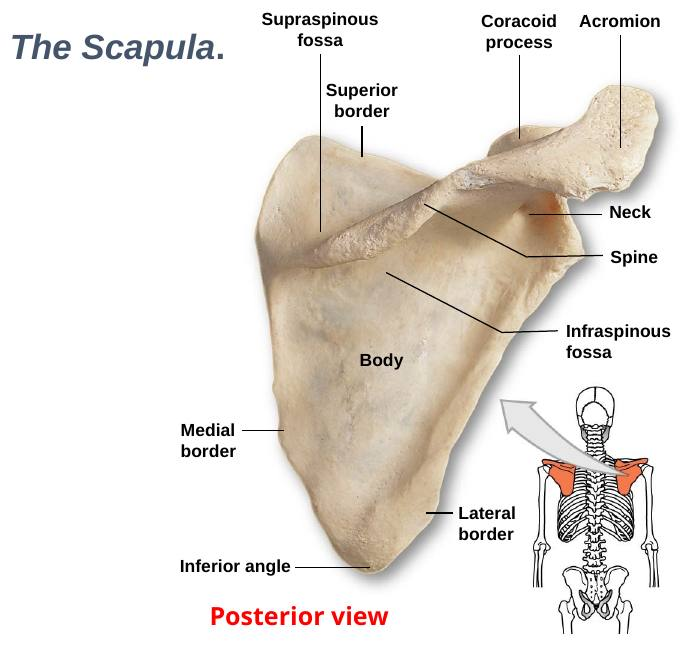
Labels: Inferior angle, Neck, Lateral border, Superior border, Acromion, Medial border, Infraspinous fossa, Coracoid process, Supraspinous fossa, Spine
Greater tubercle
Appendicular Skeleton slides (8B), slide 15
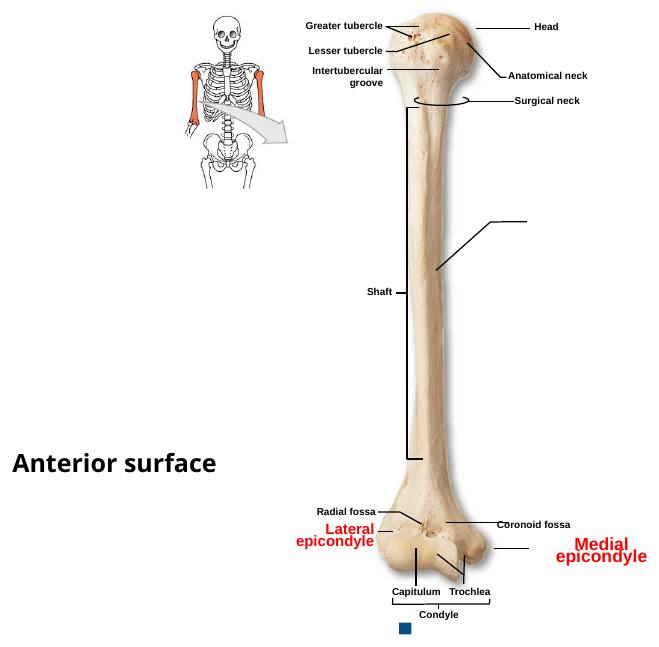
Labels: Radial fossa, Coronoid fossa, Greater tubercle, Surgical neck, Capitulum Trochlea, Lateral epicondyle, Condyle, Anatomical neck, Medial epicondyle, Lesser tubercle, Anterior surface, Shaft, Intertubercular groove
The Humerus .
Appendicular Skeleton slides (8B), slide 17
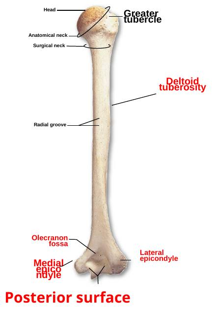
Labels: Medial epicondyle, Posterior surface, Deltoid tuberosity, Greater tubercle, Anatomical neck, Olecranon fossa, Surgical neck, Radial groove, Lateral epicondyle
The Elbow joint , Posterior view.
Appendicular Skeleton slides (8B), slide 19
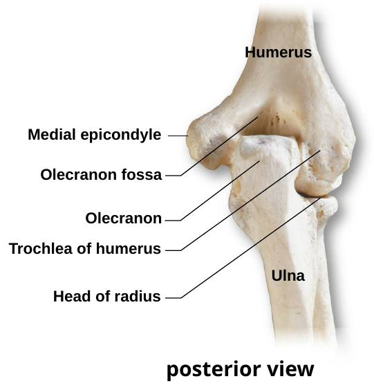
Labels: Olecranon fossa, Trochlea of humerus, Humerus, Medial epicondyle, Ulna, Olecranon, Head of radius
Olecranon
Appendicular Skeleton slides (8B), slide 22
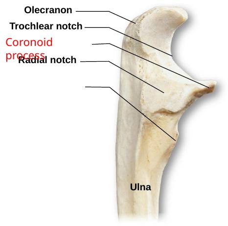
Labels: Ulna, Coronoid process, Olecranon, Trochlear notch, Radial notch
Figure 8-5b The Right Radius and Ulna.
Appendicular Skeleton slides (8B), slide 24
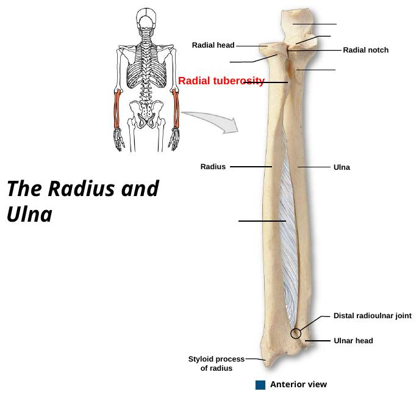
Labels: Radial head, Radial notch, Ulnar head, Radial tuberosity, Ulna, Distal radioulnar joint, Radius, Styloid process of radius
Figure 8-5a The Right Radius and Ulna.
Appendicular Skeleton slides (8B), slide 25
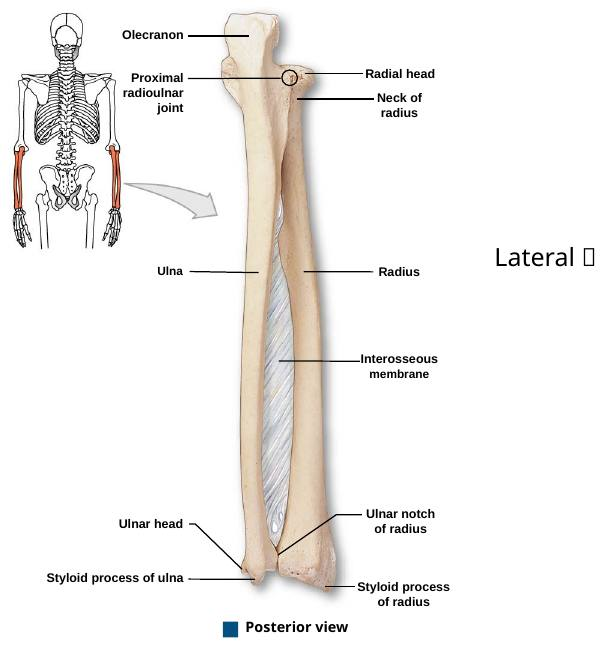
Labels: Styloid process of radius, Styloid process of ulna, Radius, Interosseous membrane, Neck of radius, Olecranon, Ulna, Radial head, Proximal radioulnar joint, Lateral , Ulnar head, Ulnar notch of radius
Radius
Appendicular Skeleton slides (8B), slide 30
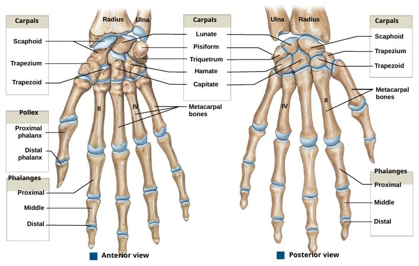
Labels: Radius, Pollex, Scaphoid, Phalanges, Trapezium, Ulna, Carpals
Figure 8-6a Bones of the Right Wrist and Hand.
Appendicular Skeleton slides (8B), slide 34
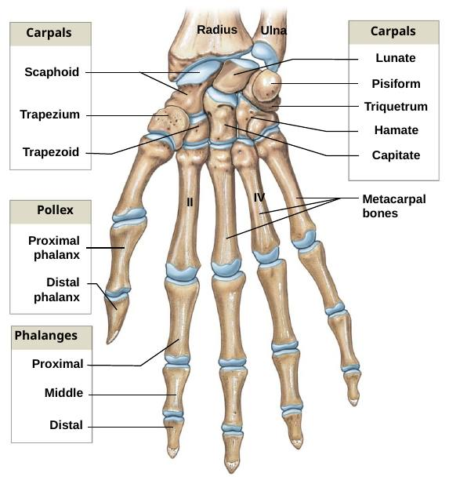
Labels: Middle, Distal phalanx, Carpals, Proximal, Distal, Trapezoid, Scaphoid, Proximal phalanx, Phalanges, Radius, Trapezium, Pollex, Ulna
Pelvis, leg & foot
Ilium
Appendicular Skeleton slides (8B), slide 47
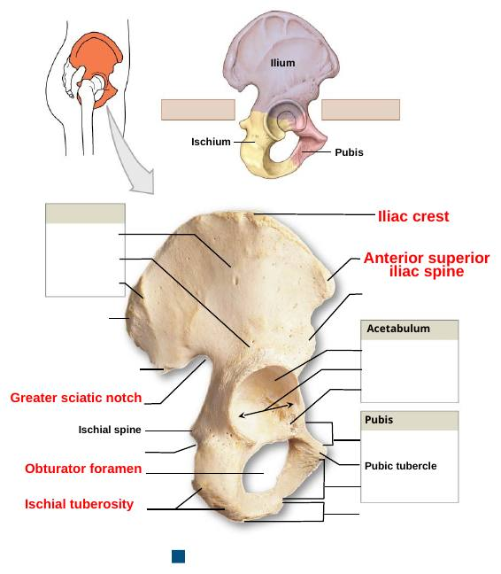
Labels: Ilium, Iliac crest, Anterior superior iliac spine, Ischium, Ischial tuberosity, Greater sciatic notch, Pubis, Pubic tubercle, Ischial spine, Acetabulum, Obturator foramen
Figure 8-7b The Right Hip Bone.
Appendicular Skeleton slides (8B), slide 48
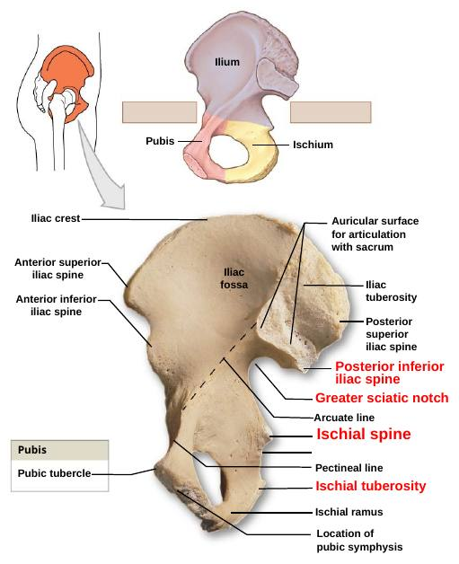
Labels: Greater sciatic notch, Ischial spine, Iliac crest, Pubic tubercle, Arcuate line, Posterior superior iliac spine, Ischium, Pubis, Posterior inferior iliac spine, Anterior superior iliac spine, Pectineal line, Anterior inferior iliac spine, Ilium, Iliac tuberosity, Iliac fossa
the Right Femur.
Appendicular Skeleton slides (8B), slide 58
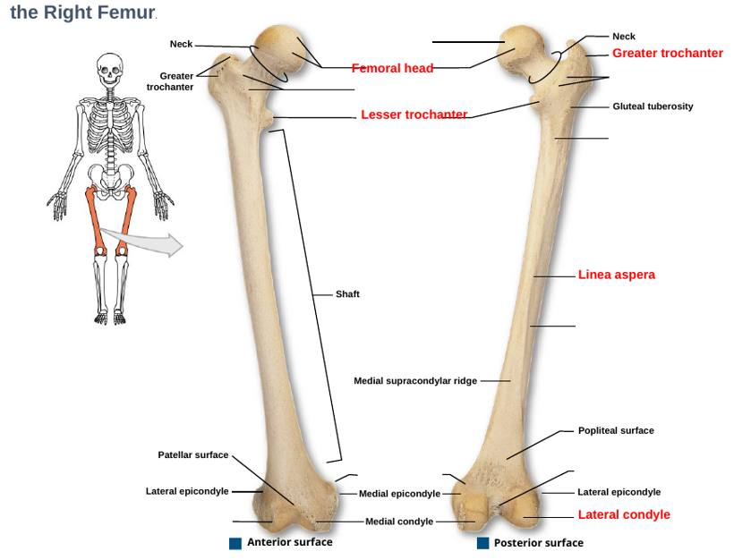
Labels: Medial condyle, Popliteal surface, Femoral head, Gluteal tuberosity, Greater trochanter, Medial supracondylar ridge, Lesser trochanter, Lateral condyle, Posterior surface, Neck, Linea aspera, Lateral epicondyle, Medial epicondyle
Lateralcondyleof femur
Appendicular Skeleton slides (8B), slide 62
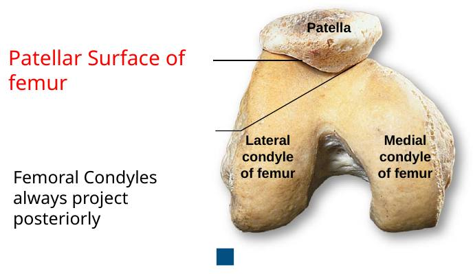
Labels: Lateral condyle of femur, Medial condyle of femur, Patellar Surface of femur, Patella
Figure 8-14a Bones of the Ankle and Foot.
Appendicular Skeleton slides (8B), slide 70
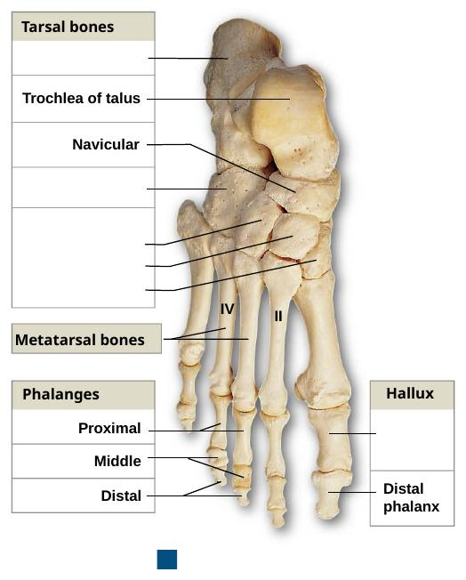
Labels: Middle, Hallux, Tarsal bones, Navicular, Distal phalanx, Trochlea of talus, Phalanges, Distal, Metatarsal bones, Proximal
The Bones of the Ankle and Foot Lateral View.
Appendicular Skeleton slides (8B), slide 71
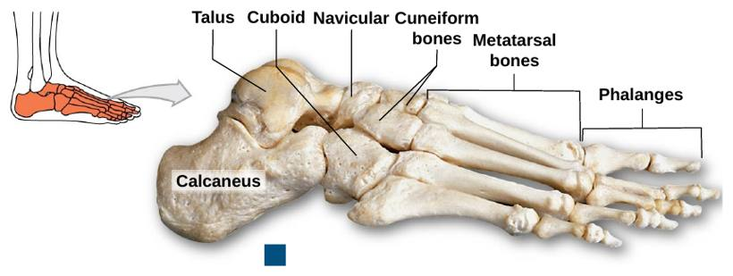
Labels: Cuboid, Metatarsal bones, Talus, Navicular, Phalanges, Cuneiform bones, Calcaneus
Skin layers & bone tissue
Hair
Ch 6 Integumentary slides, slide 28
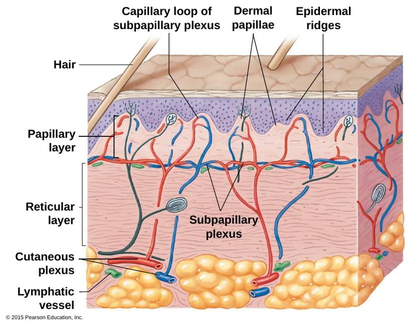
Labels: Dermal papillae, Epidermal ridges, Subpapillary plexus, Reticular layer, Cutaneous plexus, Hair, Lymphatic vessel, Papillary layer
Figure 6-6a The Structure of Compact Bone (Part 1 of 2).
Ch 7 Bone Tissue slides, slide 50
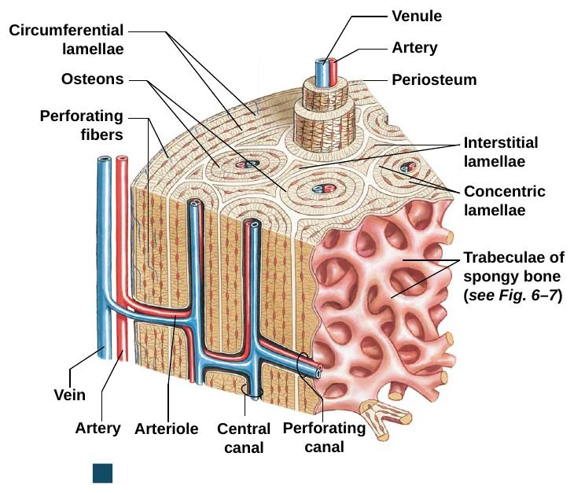
Labels: Interstitial lamellae, Central canal, Osteons, Perforating fibers, Vein, Concentric lamellae, Venule, Periosteum, Arteriole, Circumferential lamellae, Artery, Perforating canal
Figure 6-5b The Histology of Compact Bone.
Ch 7 Bone Tissue slides, slide 51
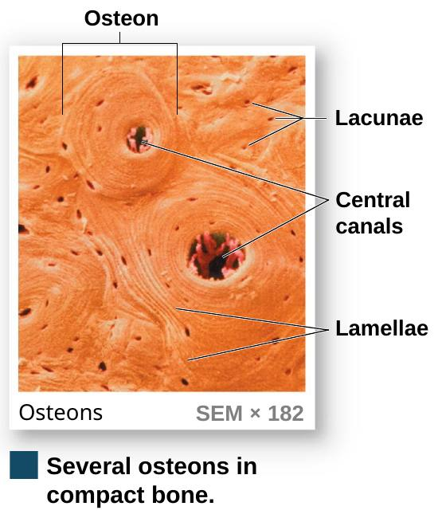
Labels: Central canals, Lamellae, Osteon, Osteons, Lacunae, Several osteons in compact bone
Figure 6-16 Types of Fractures and Steps in Repair (Part 13
Ch 7 Bone Tissue slides, slide 106
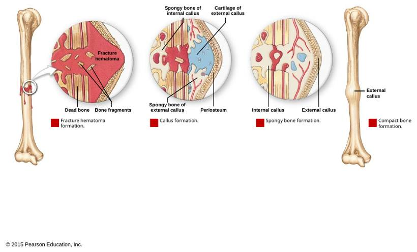
Labels: Fracture hematoma formation, Bone fragments, External callus, Fracture hematoma, Spongy bone formation, Callus formation, Compact bone formation, Spongy bone of external callus, Internal callus, Periosteum, Cartilage of external callus, Spongy bone of internal callus, Dead bone